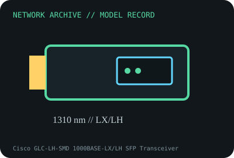

[ MODEL-SPECIFIC NETWORK HARDWARE RECORD ]
Cisco GLC-LH-SMD 1000BASE-LX/LH SFP Transceiver
1310nm Gigabit LX/LH SFP for single-mode fiber and specified multimode operation. Specifications are tied to this named product; confirm the physical label, revision and source documentation.

IDENTIFICATION: Verify exact PID/model, revision, label and host support. The catalog separates nominal PHY/link specifications from measured throughput; no benchmark is asserted unless explicitly recorded.
Model-specific specifications and compatibility
| Subcategory | SFP transceivers: optical and copper |
|---|---|
| Exact product/model | Cisco GLC-LH-SMD 1000BASE-LX/LH SFP Transceiver |
| Bus, ports and physical interface | Hot-pluggable SFP with duplex LC optical connector; compatible host SFP slot required. |
| PHY, radio or optical interface | 1000BASE-LX/LH at 1310nm. Cisco specifies up to 10km on SMF; up to 550m on multimode fiber using a mode-conditioning patch cable to address differential mode delay. |
| Nominal rate (not measured) | 1Gb/s Ethernet line rate. The 10km/550m optical reach figures are installation/link-budget limits, not measured transfer throughput. |
| Measured throughput | No specimen measurement asserted. Capture DOM values, fiber plant, patching, mode-conditioning cable, peer transceiver and traffic-test details. |
| Driver, OS and firmware | No OS NIC driver. Requires switch/router software and hardware port support for Cisco GLC-LH-SMD; DOM reporting depends on the platform. |
| Platform/media compatibility | Use matched 1310nm LX/LH on SMF; for legacy MMF at stated reach use a mode-conditioning patch cord. Avoid direct single-mode launch into multimode patching without documented link engineering. |
| Variant warning | GLC-LH-SMD has a DOM suffix and is not GLC-LH-SM, GLC-SX-MMD or the 10G SFP-10G-LR. Confirm label and fiber type; similarly shaped SFPs are not interchangeable PHYs. |
Revision, operation and measurement notes
GLC-LH-SMD has a DOM suffix and is not GLC-LH-SM, GLC-SX-MMD or the 10G SFP-10G-LR. Confirm label and fiber type; similarly shaped SFPs are not interchangeable PHYs.
No OS NIC driver. Requires switch/router software and hardware port support for Cisco GLC-LH-SMD; DOM reporting depends on the platform.
No specimen measurement asserted. Capture DOM values, fiber plant, patching, mode-conditioning cable, peer transceiver and traffic-test details.
Archival, ESD and preservation notes
Log PID, serial, DOM, host and fiber path; store capped and dust-free. Use eye-safe practice, inspect/clean connector end faces and handle module with ESD protection.
Retain source provenance and the revision/date of each supporting document. Store public records without credentials, personal information or other secrets.
Primary manufacturer and standards sources
- Cisco Gigabit Ethernet SFP modules data sheetPrimary manufacturer or standards reference; confirm exact part label, revision, and platform qualification.
- Cisco transceiver compatibility matrixPrimary manufacturer or standards reference; confirm exact part label, revision, and platform qualification.
- IEEE 802.3 Ethernet standardsPrimary manufacturer or standards reference; confirm exact part label, revision, and platform qualification.
Manufacturer source links are provided for the stated model or exact product family; use the board label and the official revision-specific compatibility list for final qualification.